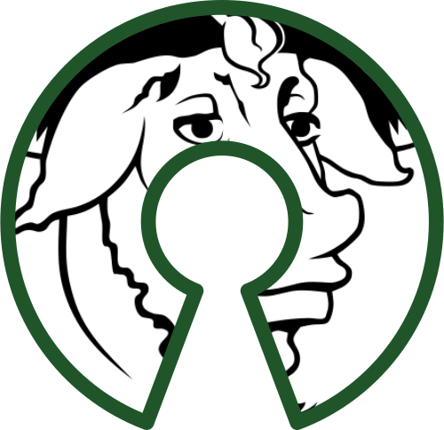
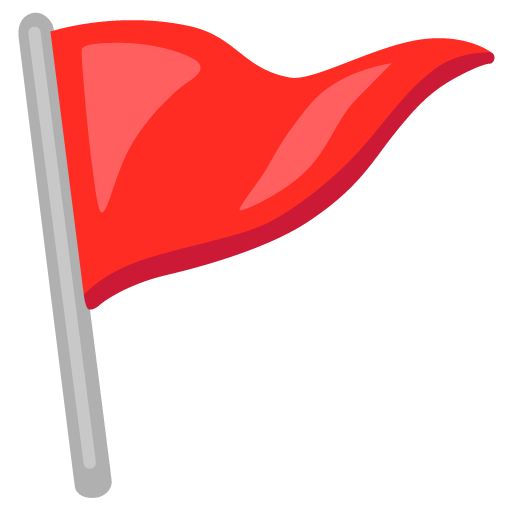

BITS-SOS
RAF OrientationFOSS
Free and Open Source Software is software that anyone is freely licensed to use, copy, study, and change the software in any way, and the source code is openly shared so that people are encouraged to voluntarily improve the design of the software.

Freedom

The Missing FOSS Culture
As you might have noticed, Linux adoption is very low on campus among students and faculty alike! As a premier Technological Institute, we should have a much, much higher rate of Linux adoption.
Enter SOS
Society for Open Software (SOS) is a society formed with the purpose of increasing awareness of free and open source software and boost student engagement with the open source community.


Workshops

Details
Every year, we hold a Dualbooting and a Linux Basics workshop.
We will also hold workshops on Networking and Cybersecurity, so keep an eye out for announcements!
CTFs
A Capture the Flag tournament involves solving various tasks in the domains of Reverse Engineering, Web Exploitation, Open Source Intelligence, Cryptography and many others.

Ranking
- 1st place in IIT Goa's CTF
- 2nd place in BITS Goa's CTF and IIT Hyderabad's Enigma event
- Top 5 in a number of other CTFs
- Ranked 25th all over India
If you want to join us…
We're looking for people that use GNU/Linux and feel at home inside a terminal. If you feel like you fit the bill, please reach out to us here.
Link to these slides
Contacts
| President | Secretary |
|---|---|
| Sarthak Shah | N Pranav Krishna |
| 8767059061 | 6309481575 |